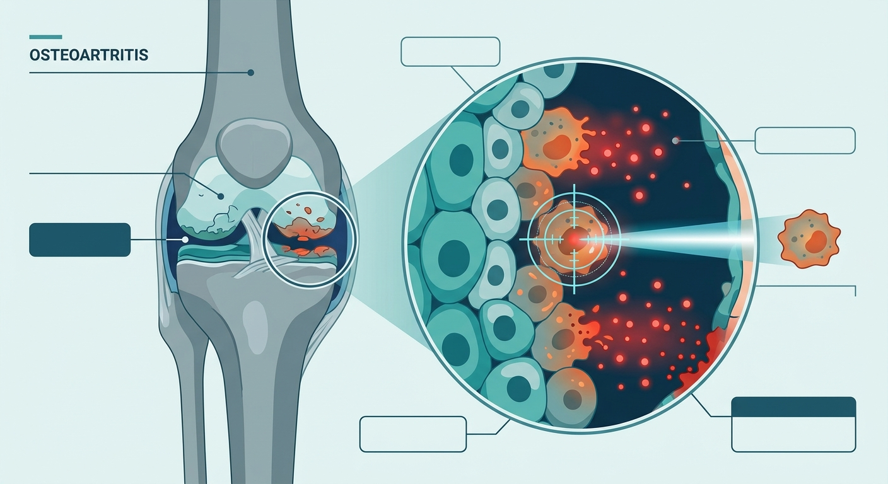

A Sniper Rifle for Zombie Cells: Pinpointing the Cellular Saboteurs That Age Our Joints

For decades, medicine has treated osteoarthritis like a bald tire. The conventional wisdom was simple: live long enough, walk far enough, and the shock-absorbing cartilage in your knees and hips will inevitably wear down to the bone. It was viewed as a mechanical tragedy—an unfortunate byproduct of gravity and time.
But joints are not inert rubber, and biology is rarely that passive. Under the hood, osteoarthritis is less like a worn-out tire and more like an active, slow-burning biological heist. At the center of this crime scene are senescent cells—often called "zombie cells." These cells have stopped dividing but refuse to die, lingering in the joint tissue and secreting a toxic cocktail of chemicals that degrades cartilage and forces healthy neighboring cells into early retirement.
Until now, our attempts to clear these cellular saboteurs have been remarkably blunt, akin to carpet-bombing an entire tissue to get rid of a few bad actors. But in a groundbreaking study published in the journal Cell Reports, researchers have traded the carpet bomb for a sniper rifle. By mapping the joint at single-cell resolution, the team has identified the exact cellular puppet master driving joint aging: a specific, hyper-inflammatory subset of immune cells marked by high levels of the enzyme PTGS2.
The Double Agents in Our Joints
To understand this discovery, we have to look at macrophages. Historically, these immune cells were thought of as the body's trash collectors, sweeping up debris and quietening inflammation. However, in the aging joint, some macrophages undergo a dark transformation. They stop healing and start harming.
Using advanced single-cell RNA sequencing on naturally aged mice, the researchers peered into the cellular landscape of the joint with unprecedented clarity. They discovered that as joints age, a highly distinct subpopulation of macrophages begins to dominate. These cells are characterized by an incredibly high expression of PTGS2 (prostaglandin-endoperoxide synthase 2, also known as COX-2)—the very enzyme that traditional painkillers like ibuprofen and Celebrex try to block globally.
But these PTGS2-high macrophages aren't just bystander cells; they are active instigators. Through sophisticated lineage tracing in mouse models of surgically induced osteoarthritis, the scientists watched in real-time as these specific macrophages multiplied, migrated to the cartilage interface, and began whispering chemical instructions to the local chondrocytes (the cells responsible for maintaining healthy cartilage). The message they delivered was clear: it’s time to become a zombie. Under the influence of these PTGS2-high macrophages, healthy chondrocytes rapidly entered senescence, bringing cartilage maintenance to a grinding halt.
The Genetic Kill Switch
To prove that these PTGS2-high macrophages were indeed the ringleaders of joint decay—and not just symptoms of it—the research team designed an elegant genetic experiment. They engineered a mouse model featuring a diphtheria toxin receptor (DTR) linked directly to the genetic promoter of these specific macrophages. This gave the researchers a biological "kill switch."
When they triggered this switch, selectively wiping out only the PTGS2-high macrophages while leaving other healthy immune cells untouched, the results were nothing short of stunning. The destructive cascade halted. Cartilage senescence was sharply attenuated, and the progression of osteoarthritis was dramatically slowed. The joint, once on a fast track to painful degradation, was functionally preserved.
Why This Changes the Longevity Playbook
For biotech investors and longevity scientists, the implications of this study stretch far beyond joint pain. This research represents a vital proof-of-concept for the next generation of senotherapeutics: cell-specific targeting.
First-generation senolytics—drugs designed to clear senescent cells systemically—have faced hurdles in clinical trials due to off-target side effects. After all, senescent cells do play minor roles in wound healing, and wiping them out indiscriminately can cause unintended harm. Furthermore, simply taking systemic COX-2 inhibitors (like NSAIDs) to block PTGS2 carries notorious cardiovascular and gastrointestinal risks.
The Cell Reports study bypasses these roadblocks entirely. By demonstrating that we can target the *upstream cellular driver* of senescence in a highly localized, cell-specific manner, it opens the door for localized therapies—such as intra-articular gene therapies, antibody-drug conjugates, or targeted lipid nanoparticles—that can disarm joint aging at its source without disrupting the rest of the body's delicate biology.
In the race to extend human healthspan, the joints are a crucial battleground. By proving we can pinpoint and eliminate the exact cellular saboteurs responsible for osteoarthritis, this research brings us one step closer to a future where our joints can remain as youthful and resilient as the minds they carry.
Sources & Citations:
Primary Source: Targeting pro-senescent PTGS2 (Cell reports)
- Primary Source: "Targeting pro-senescent PTGS2." Cell Reports, 2026, 117907. https://doi.org/10.1016/j.celrep.2026.117907